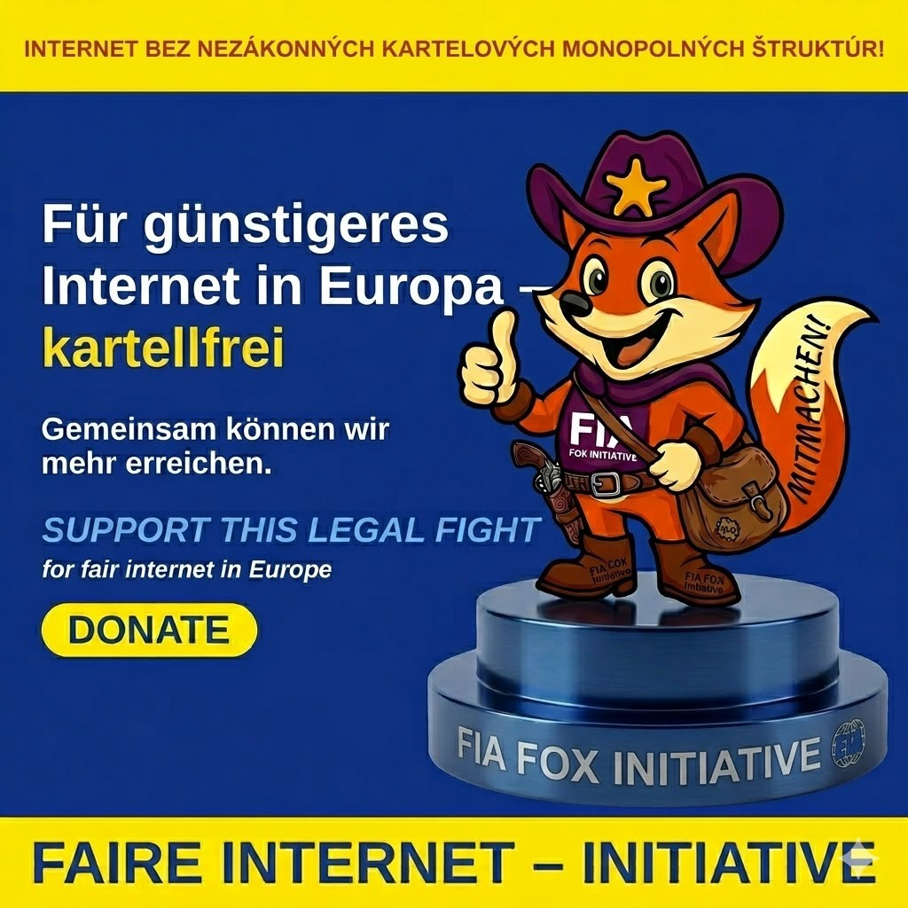

FIA FOX ist eine Bürgerinitiative für ein faires Internet und fairen Wettbewerb in der Europäischen Union.FIA FOX is a citizens' initiative for a fair internet and fair competition in the European Union.FIA FOX je občianska iniciatíva za férový internet a spravodlivú hospodársku súťaž v Európskej únii.FIA FOX je građanska inicijativa za pošten internet i pošteno tržišno natjecanje u Europskoj uniji.FIA FOX to inicjatywa obywatelska na rzecz uczciwego internetu i uczciwej konkurencji w Unii Europejskiej.FIA FOX es una iniciativa ciudadana por un internet justo y una competencia leal en la Unión Europea.FIA FOX è un'iniziativa dei cittadini per un internet equo e una concorrenza leale nell'Unione europea.FIA FOX est une initiative citoyenne pour un internet équitable et une concurrence loyale dans l'Union européenne.FIA FOX är ett medborgarinitiativ för ett rättvist internet och sund konkurrens i Europeiska unionen.
Wir wenden uns gegen wettbewerbswidrige Kartell- und Monopolpraktiken marktbeherrschender Konzerne, die nach Auffassung der Initiative zu deren ungerechtfertigter Bereicherung, zu überhöhten Preisen, zur Einschränkung des fairen Wettbewerbs und zu Eingriffen in die Vermögensrechte der Bürgerinnen und Bürger der Europäischen Union führen.We oppose the anti-competitive cartel and monopoly practices of dominant corporations which, in the initiative's view, lead to their unjustified enrichment, to excessive prices, to the restriction of fair competition and to interference with the property rights of the citizens of the European Union.Vystupujeme proti protisúťažným kartelovým a monopolistickým praktikám korporácií s dominantným postavením na trhu, ktoré podľa názoru iniciatívy vedú k ich neoprávnenému obohacovaniu, k neprimerane vysokým cenám, k obmedzovaniu spravodlivej hospodárskej súťaže a k zásahom do majetkových práv občanov Európskej únie.Suprotstavljamo se protutržišnim kartelnim i monopolnim praksama vladajućih korporacija koje, prema inicijativi, vode njihovu neopravdanom bogaćenju, previsokim cijenama, ograničenju poštenog tržišnog natjecanja i zadiranju u imovinska prava građana Europske unije.Sprzeciwiamy się antykonkurencyjnym praktykom kartelowym i monopolowym dominujących koncernów, które zdaniem inicjatywy prowadzą do ich nieuzasadnionego wzbogacenia, do zawyżonych cen, do ograniczenia uczciwej konkurencji i do ingerencji w prawa majątkowe obywateli Unii Europejskiej.Nos oponemos a las prácticas anticompetitivas de cártel y monopolio de las grandes empresas dominantes que, a juicio de la iniciativa, conducen a su enriquecimiento injustificado, a precios excesivos, a la restricción de la competencia leal y a injerencias en los derechos patrimoniales de los ciudadanos de la Unión Europea.Ci opponiamo alle pratiche anticoncorrenziali di cartello e monopolio dei gruppi dominanti che, secondo l'iniziativa, portano al loro ingiustificato arricchimento, a prezzi eccessivi, alla restrizione della concorrenza leale e a interferenze nei diritti patrimoniali dei cittadini dell'Unione europea.Nous nous opposons aux pratiques anticoncurrentielles d'entente et de monopole des groupes dominants qui, selon l'initiative, conduisent à leur enrichissement injustifié, à des prix excessifs, à la restriction d'une concurrence loyale et à des atteintes aux droits patrimoniaux des citoyens de l'Union européenne.Vi motsätter oss konkurrensbegränsande kartell- och monopolmetoder hos dominerande koncerner som enligt initiativet leder till deras oberättigade berikning, till överpriser, till inskränkt sund konkurrens och till ingrepp i EU-medborgarnas egendomsrätt.
FIA FOX arbeitet unabhängig und ohne externe Finanzierung durch Unternehmen oder Institutionen. Ihre Spende ermöglicht die Rechtsdurchsetzung im öffentlichen Interesse.FIA FOX works independently and without external funding from companies or institutions. Your donation makes legal enforcement in the public interest possible.FIA FOX pracuje nezávisle a bez externého financovania od firiem či inštitúcií. Vaša donácia umožňuje právne presadzovanie vo verejnom záujme.FIA FOX djeluje neovisno i bez vanjskog financiranja od tvrtki ili institucija. Vaša donacija omogućuje pravno provođenje u javnom interesu.FIA FOX działa niezależnie i bez zewnętrznego finansowania od firm czy instytucji. Twoja darowizna umożliwia egzekwowanie prawa w interesie publicznym.FIA FOX trabaja de forma independiente y sin financiación externa de empresas o instituciones. Su donación hace posible la aplicación del Derecho en interés público.FIA FOX opera in modo indipendente e senza finanziamenti esterni da imprese o istituzioni. La vostra donazione rende possibile l'applicazione del diritto nell'interesse pubblico.FIA FOX agit de manière indépendante et sans financement externe d'entreprises ou d'institutions. Votre don permet l'application du droit dans l'intérêt public.FIA FOX arbetar oberoende och utan extern finansiering från företag eller institutioner. Din gåva möjliggör rättslig efterlevnad i allmänhetens intresse.
Ihre Spende deckt:Your donation covers:Vaša donácia pokrýva:Vaša donacija pokriva:Twoja darowizna pokrywa:Su donación cubre:La vostra donazione copre:Votre don couvre :Din gåva täcker:
Wir legen offen, dass die Spenden nicht nur die Verfahrenskosten decken, sondern auch die laufenden Bürokosten und die vollwertige Koordination unserer Initiative. Jeder Beitrag stärkt unsere Fähigkeit, Verdachtsfälle rechtswidriger Kartellpraktiken zu dokumentieren, rechtlich anzufechten und vor den zuständigen europäischen Stellen geltend zu machen — mit dem Ziel, die betroffenen Akteure auf rechtmäßigem Weg in den Wettbewerb zurückzuführen und ein faires Gerichtsverfahren zu erreichen.We disclose that donations cover not only the costs of proceedings but also the day-to-day running of the office and the full coordination of our initiative. Every contribution strengthens our ability to document suspected unlawful antitrust practices, to challenge them legally and to assert them before the competent European authorities — with the aim of lawfully returning the actors concerned to competition and achieving a fair trial.Zverejňujeme, že dary pokrývajú nielen náklady na konania, ale aj bežnú réžiu chodu kancelárie a plnohodnotnú koordináciu našej iniciatívy. Každý príspevok posilňuje našu schopnosť dokumentovať podozrenia z nezákonných antitrustových praktík, právne ich napádať a uplatňovať pred príslušnými európskymi orgánmi — s cieľom zákonnou cestou priviesť dotknutých aktérov do konkurenčného postavenia a dosiahnuť spravodlivý súdny proces.Otkrivamo da donacije pokrivaju ne samo troškove postupaka, nego i tekuće troškove ureda te punu koordinaciju naše inicijative. Svaki prilog jača našu sposobnost dokumentiranja sumnji na nezakonite protutržišne prakse, njihova pravnog osporavanja i isticanja pred nadležnim europskim tijelima — s ciljem da se zakonitim putem dotični akteri vrate u tržišno natjecanje i postigne pravedno suđenje.Ujawniamy, że darowizny pokrywają nie tylko koszty postępowań, lecz także bieżące koszty biura i pełną koordynację naszej inicjatywy. Każda wpłata wzmacnia naszą zdolność do dokumentowania podejrzeń bezprawnych praktyk antymonopolowych, ich prawnego kwestionowania i dochodzenia przed właściwymi organami europejskimi — w celu zgodnego z prawem przywrócenia danych podmiotów do konkurencji i uzyskania sprawiedliwego procesu.Divulgamos que las donaciones cubren no solo los costes de los procedimientos, sino también los gastos corrientes de la oficina y la plena coordinación de nuestra iniciativa. Cada aportación refuerza nuestra capacidad de documentar sospechas de prácticas antimonopolio ilícitas, de impugnarlas jurídicamente y de hacerlas valer ante las autoridades europeas competentes — con el fin de devolver por vía legal a los actores implicados a la competencia y lograr un juicio justo.Rendiamo noto che le donazioni coprono non solo le spese dei procedimenti, ma anche le spese correnti dell'ufficio e il pieno coordinamento della nostra iniziativa. Ogni contributo rafforza la nostra capacità di documentare sospette pratiche antitrust illecite, di contestarle legalmente e di farle valere dinanzi alle autorità europee competenti — con l'obiettivo di riportare per vie legali gli attori coinvolti alla concorrenza e di ottenere un processo equo.Nous indiquons clairement que les dons couvrent non seulement les frais de procédure, mais aussi les frais courants de bureau et la pleine coordination de notre initiative. Chaque contribution renforce notre capacité à documenter des soupçons de pratiques anticoncurrentielles illicites, à les contester en justice et à les faire valoir devant les autorités européennes compétentes — dans le but de ramener légalement les acteurs concernés à la concurrence et d'obtenir un procès équitable.Vi redovisar öppet att gåvorna täcker inte bara kostnaderna för förfarandena utan även den löpande kontorsdriften och den fullständiga samordningen av vårt initiativ. Varje bidrag stärker vår förmåga att dokumentera misstänkta olagliga konkurrensmetoder, att bestrida dem rättsligt och att göra dem gällande inför behöriga europeiska myndigheter — i syfte att på laglig väg återföra de berörda aktörerna till konkurrens och uppnå en rättvis rättegång.
Jede Spende – ob einmalig oder monatlich – bringt uns einem fairen und erschwinglichen Internet in Europa näher.Every donation — one-time or monthly — brings us closer to a fair and affordable internet in Europe.Každá donácia — jednorazová či mesačná — nás približuje k férovému a dostupnému internetu v Európe.Svaka donacija — jednokratna ili mjesečna — približava nas poštenom i pristupačnom internetu u Europi.Każda darowizna — jednorazowa czy miesięczna — przybliża nas do uczciwego i przystępnego internetu w Europie.Cada donación — única o mensual — nos acerca a un internet justo y asequible en Europa.Ogni donazione — una tantum o mensile — ci avvicina a un internet equo e accessibile in Europa.Chaque don — ponctuel ou mensuel — nous rapproche d'un internet équitable et abordable en Europe.Varje gåva — engångs eller månatlig — för oss närmare ett rättvist och prisvärt internet i Europa.
Teilen Sie diese Spendenaktion — es ist kostenlos und das Wirksamste, was Sie neben der finanziellen Unterstützung tun können! Bezahlte Werbung für gesellschaftliche Themen ist in der EU nahezu unmöglich, deshalb verbreitet sich unsere Botschaft fast ausschließlich über Sie. Jedes Teilen bringt weitere Bürgerinnen und Bürger in der gesamten EU zu FIA FOX.Share this fundraiser — it's free and it's the most effective thing you can do alongside financial support! Paid advertising for civic causes is almost impossible in the EU, so our message spreads almost entirely through you. Every share brings more citizens across the EU to FIA FOX.Zdieľajte túto zbierku — je to zadarmo a je to to najúčinnejšie, čo môžete urobiť popri finančnej podpore! Platená reklama na občianske témy je v EÚ takmer nemožná, preto sa naše posolstvo šíri takmer výlučne cez vás. Každé zdieľanie privedie k FIA FOX ďalších občanov v celej EÚ.Podijelite ovu akciju — besplatno je i najučinkovitije što možete učiniti uz financijsku podršku! Plaćeno oglašavanje za građanske teme u EU-u gotovo je nemoguće, pa se naša poruka širi gotovo isključivo preko vas. Svako dijeljenje dovodi FIA FOX-u nove građane diljem EU-a.Udostępnij tę zbiórkę — to nic nie kosztuje i jest najskuteczniejszą rzeczą, jaką możesz zrobić obok wsparcia finansowego! Płatna reklama tematów obywatelskich jest w UE niemal niemożliwa, dlatego nasze przesłanie rozprzestrzenia się niemal wyłącznie dzięki Tobie. Każde udostępnienie przyprowadza do FIA FOX kolejnych obywateli w całej UE.¡Comparta esta recaudación — es gratis y es lo más eficaz que puede hacer junto con el apoyo económico! La publicidad pagada para causas cívicas es casi imposible en la UE, por lo que nuestro mensaje se difunde casi exclusivamente a través de usted. Cada vez que comparte, llegan más ciudadanos de toda la UE a FIA FOX.Condividi questa raccolta — è gratis ed è la cosa più efficace che puoi fare oltre al sostegno economico! La pubblicità a pagamento per temi civici è quasi impossibile nell'UE, perciò il nostro messaggio si diffonde quasi esclusivamente grazie a te. Ogni condivisione porta a FIA FOX altri cittadini in tutta l'UE.Partagez cette collecte — c'est gratuit et c'est la chose la plus efficace que vous puissiez faire en plus du soutien financier ! La publicité payante pour des causes citoyennes est quasi impossible dans l'UE, c'est pourquoi notre message se diffuse presque exclusivement grâce à vous. Chaque partage amène à FIA FOX de nouveaux citoyens dans toute l'UE.Dela den här insamlingen — det är gratis och det mest effektiva du kan göra vid sidan av ekonomiskt stöd! Betald annonsering för samhällsfrågor är nästan omöjlig i EU, så vårt budskap sprids nästan enbart genom dig. Varje delning för fler medborgare i hela EU till FIA FOX.